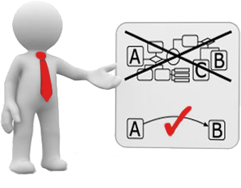

| Factibilidad operativa | |
|---|---|
| La operativa se entiende como la determinación de la probabilidad de que un nuevo sistema se use y funcione como se supone, es decir, la posibilidad que tiene la aplicación en cuestión de que funcione como se espera y que se acople correctamente a las estructuras y la planeación del curso como se ha mencionado anteriormente, además se debe contemplar que dicha aplicación o plataforma no quede desfazada para poder continuar con la educación en todo momento a lo largo del curso. Los elementos del curso deben ser compatibles en todo momento con la aplicación a usar, asimismo el personal que utilizará la plataforma, debe poder crear contenido en todo momento y dar seguimiento al contenido ya creado. Los contenidos de la plataforma deben estar disponibles en todo momento para consultas por parte de los estudiante, profesores, tutores y personal de la institución educativa. Se debe tomar en cuenta la complejidad de la plataforma a utilizar ya que debe ser amigable tanto para el personal que la va a operar como para las personas que harán uso de ella y de su contenido. Otro punto importante es que el conjunto de la plataforma con su contenido sea atractivo para los usuarios y no se resistan al uso de esta o se sientan abrumados por este tipo de modelo de educación. También es importante dar capacitación a los docentes y al personal que tendrá acceso a la plataforma, es importante resaltar que un cambio repentino a un sistema nuevo puede ocasionar rezago y perdida de interés al aprendizaje por parte de los estudiantes, incluso la falta de conocimientos sobre el nuevo sistema puede afectar a los profesores que no están tan familiarizados al entorno computacional. Siendo este ultimo un grave problema si no se le imparte capacitación a los docentes que lo requieran, la capacitación debe cubrir todos los puntos necesarios. En caso de que esto no ocurra, el docente posiblemente opte por usar otras herramientas para impartir su curso ocasionando problemas tanto para el mismo y para sus alumnos. En propuestas educativas a distancia, las actividades anteriormente mencionadas tienen como apoyo los materiales didácticos, los cuales suelen desarrollarse utilizando una selección y compilación de lecturas y actividades de distintas fuentes documentales, o libros y guías de aprendizaje elaborados por especialistas de la disciplina involucrada. Estas fuentes deben ser incluidas de forma que no inflijan sobre la Ley de Federal de Derechos de Autor que se verá más adelante. |  |
| Factibilidad Técnica | |
|---|---|

|
El software a utilizar debe ser compatible con cualquier formato de documento, dígase paquetería de office, formato de documento portátil (PDF), cualquier formato común de imágenes (png., jpg., gif…), presentaciones con vínculos a páginas externas, etc. En el caso para los cursos enfocados a las matemáticas, la plataforma a elegir debe poder soportar simulaciones de gráficos, así como contar con simuladores de planos cartesianos por mencionar algunos. La plataforma debe tener un sistema funcional de mensajería instantánea entre profesor y alumno con el fin de que se puedan resolver dudas a través de este, comentarios sobre las asignaciones propuestas por los profesores y contacto con tutores y con secretaría del area en cuestión. Sería recomendable que la misma plataforma tuviese disponibilidad de realizar transmisiones en vivo para simular las clases presenciales y que estas se almacenaran en los contenidos del curso para poder ser consultadas en cualquier momento. En el caso de que no fuese posible, acoplar la planeación para utilizar aplicaciones externas la elegida, pero con las mismas funciones mencionadas. Se deben tener los recursos necesarios para elaborar todos los contenidos del curso de manera digital y que sean consultados por los estudiantes y lograr que obtenga una experiencia similar a la obtenida en clases presenciales para no perder la calidad del aprendizaje. Para esto ultimo se debe tener en cuenta que el estudiante debe ser autodidacta en la obtención de conocimientos y debe buscar soluciones externas a la plataforma en caso requerido. Esto no significa que el alumno hará todo por su cuento, sino no tendría caso contar con docentes dentro de la planeación del sistema. El docente debe estar capacitado no solo para utilizar las tecnologías planeadas como ya se mencionó, sino que debe estar capacitado para dar un curso en línea de calidad ya que es muy diferente la modalidad de clases presenciales a clases a distancia. El docente no solo se encargará de asignar actividades, este debe evaluar las actividades de todos los alumnos dando una retroalimentación basada en el contenido de los trabajos ent regados por los alumnos lo antes posible, ya que de eso se trata el papel de profesor. Por parte de tutorías, debería de existir una sección en la plataforma o por medios externos para que los alumnos puedan ponerse en contacto con ellos. La plataforma debe ser accesible para todos los interesados ya sea hablando de requerimientos del computador de los usuarios o sea económicamente, para esto se tiene que tomar en cuenta que no todos los usuarios tienen la misma posibilidad de adquirir una computadora con grandes capacidades o complementos como cámaras web o micrófonos, lo que puede ocasionar que la calidad de las clases virtuales disminuya. Un objetivo de la educación a distancia es que se reducen los costos generales de la educación, dígase costos de inscripción y reinscripción (en algunos casos), costos de traslado, costo de recursos materiales y además se pueden incluir riesgos de perdida o descompostura de algunos recursos. Por lo que se debe de ser accesible con las cuestiones económicas que pueda implicar el curso. |
| Factibilidad Legal |
|---|
| La factibilidad legal se refiere a que el uso del sistema a utilizar y todo lo que este implica no debe infringir alguna norma o ley establecida a nivel local, estatal, federal o Mundial. Por lo que los contenidos del curso a impartir deben ser de dominio propio o público, en caso de que no sea el caso, se debe tener licencia por parte del creador del contenido utilizado. Este contenido esta protegido por la Ley Federal Del Derecho De Autor que estipula en su Articulo 11 que: El derecho de autor es el reconocimiento que hace el Estado en favor de todo creador de obras literarias y artísticas previstas en el artículo 13 de esta Ley, en virtud del cual otorga su protección para que el autor goce de prerrogativas y privilegios exclusivos de carácter personal y patrimonial. Existe mucho contenido valioso y productivo que es totalmente libre o gratuito en la web, por lo que difícilmente se tendrán problemas de este tipo a menos que se requiera un contenido especifico bajo licencia o se necesite complementar el contenido del curso con contenido de terceros, por ejemplo, CCNA de cisco, talleres por parte de otras instituciones educativas, entre otros. Es importante proteger los datos personales de los usuarios que emplearan la plataforma, por lo que se tiene que utilizar una plataforma segura que trabaje bajo la Ley Orgánica de Protección de Datos (LOPD). Es una ley que tiene por objeto garantizar y proteger, en lo que concierne al tratamiento de los datos personales, las libertades públicas y los derechos fundamentales de las personas físicas, y especialmente de su honor, intimidad y privacidad personal y familiar. Su objetivo principal es regular el tratamiento de los datos y ficheros, de carácter personal, independientemente del soporte en el cual sean tratados, los derechos de los ciudadanos sobre ellos y las obligaciones de aquellos que los crean o tratan. La Ley comprende un total de 49 artículos divididos en 7 Títulos y finaliza con una serie de disposiciones. Su estructura es la siguiente: |
|
| Anterior | Principal | Siguiente |